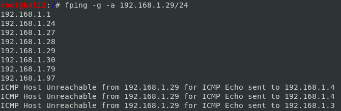
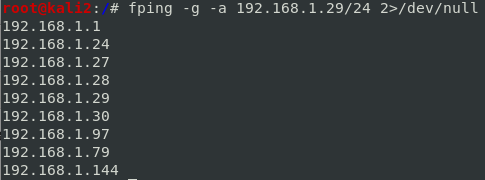

fping
fping is an improved version of the standard ping utility
OPTIONS:
-g or
--generate → generate a target list from a supplied
IP netmask, or a
starting and ending IP-a or
--alive → from the output show only systems that are alive
-e or
--elapsed → time required to send and receive a packet, useful if we want to check IPS,IDS or Firewall are inside the network
-r or
--retry=N → retry limit (default 3). This is the number of times an attempt at pinging a target will be made, not including the first try.
-q or
--quiet → quiet. Don't show per-probe results, but only the final summary. Also don't show ICMP error messages. This mean we will see only the alive hosts
 When we are on a LAN, or we are on a VM that is like we are on a LAN, we will get warning messages (ICMP Host Unreachable), abouts offline hosts even if we use the
-a option.
To suppress these warnings we can redirect the standard error(STDERR) to /dev/null
